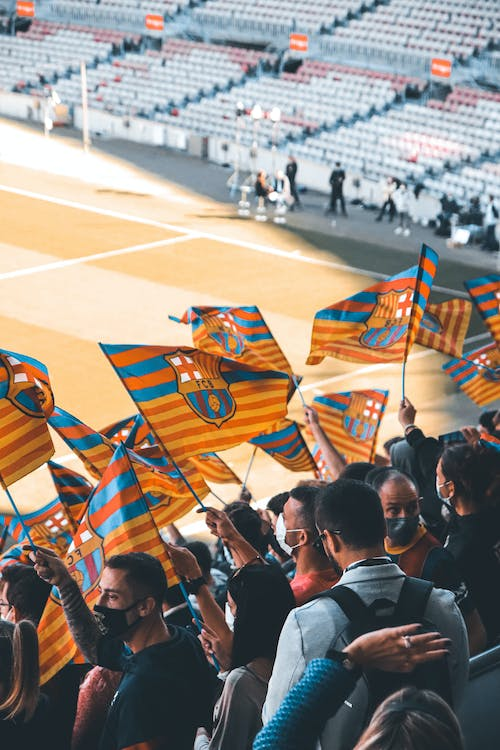

Az FC Barcelona Spanyolország Katalónia tartományának labdarúgócsapata. A klub a spanyol
labdarúgó-bajnokság kezdetétől megszakítás nélkül részt vesz az első osztály bajnoki küzdelmeiben.
Az egyesületet 1899. november 29-én alapította a svájci Hans Gamper. Az FC Barcelona előbb a katalán
regionális bajnokságban és a spanyol labdarúgókupában, később pedig az 1928-ban megalakított egységes
spanyol labdarúgó-bajnokságban és a nemzetközi kupákban vált a spanyol, valamint a nemzetközi
labdarúgás egyik legmeghatározóbb egyesületévé.


Az FC Barcelona szurkolóinak beceneve culé, ami a katalán cul szóból származik, mivel a
csapat szurkolói a Camp de la Indústria stadionban, úgy ültek a lelátókon, hogy csak a fenekük látszódott az utcáról
és ezért kapták ezt a gúnyos nevet. Spanyolországban, a lakosság 25%-a mondja magát Barcelona szimpatizánsnak, míg a
lakosság 32%-a a Real Madrid-ot támogatja. Felmérések szerint Európa-szerte, jelenleg az FC Barcelonának van a
legnagyobb szurkoló tábora. A klub szurkolóinak száma jelentősen növekedett, a 2003–04-es szezontól kezdve
2009-ig. Az FC Barcelona a világ egyik legjobban támogatott csapata. A közösségi médiában is rengeteg követője
van a világon, a Facebookon több mint 102 millió rajongója van 2018 decemberében.
Cruyffot
Bobby Robson követte. Az angol edző azonban rövid idő elteltével távozott és a helyére az AFC Ajax sikeredzője
Louis van Gaal érkezett. Az új edzőkkel az FC Barcelona az 1996–97-es szezonban is megnyerte a kupagyőztesek
Európa-kupáját
és két egymást követő bajnoki címet szerzett. A sikerek ellenére egyre inkább növelte a megosztottságot az az érzés, hogy
lezárult egy fontos és sikeres korszak az egyesület életében. A holland edző a klub egyik legellentmondásosabb edzője volt.